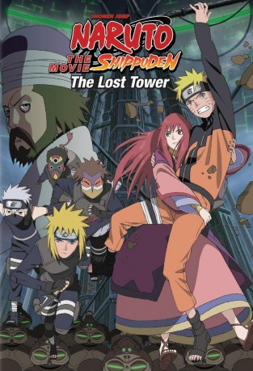

#5979 Naruto Shippuden - The Movie 4 - The Lost Tower
 
 IMDB-Wertung: 7.2 / 10
IMDB-Wertung: 7.2 / 10  Metascore: 0
Metascore: 0 
Auf der Jagd nach dem flüchtigen Ninja Mukade gelangt Naruto in die Ouran- Ruinen. Als es ihm endlich gelingt, Mukade an einer mächtigen Ley-Linie zu stellen, aktiviert dieser die unbegrenzte Kraft der Linie und schickt Naruto 20 Jahre in die Vergangenheit. Schnell stellt Naruto fest, dass er nur mit der Hilfe eines Mannes wieder in seine Zeitlinie zurückkehren und Mukade aufhalten kann. Nur ist dieser Mann ausgerechnet Minato Namikaze, der vierte Hokage.
Jahr: 2010
Dauer: 85 Minuten
FSK:
Land: Japan Studio: KSMTonspuren: DTS - ,
Untertitel: Deutsch,
Auflösung: 1080p (1920x1040) Größe: 3348 MB
Genre: Action, Abenteuer, Fantasy, Animation/Trick
Regisseur: Masahiko Murata
Drehbuch: Charles Belden
Soundtrack:
Darsteller:
Datei: X:\HD-Anime-Collections\Naruto Movies\Naruto Shippuden - The Movie 4 - The Lost Tower (2010, FSK, 1920x1040).mkv seit 16.04.2017
Festplatte: Gemischt-01+Anime
 Es gibt insgesamt 17 Filme in der Gruppe 'HD-Anime-Collections\Naruto Movies'
Es gibt insgesamt 17 Filme in der Gruppe 'HD-Anime-Collections\Naruto Movies'